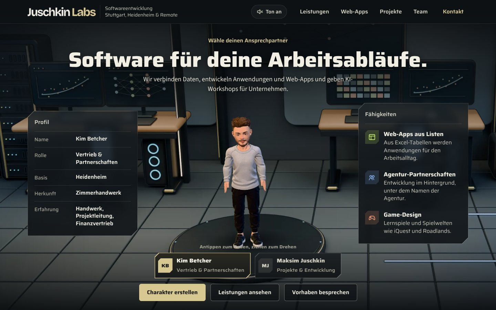

Gemeinsam mit meinem Geschäftspartner
Juschkin Labs
Maksim Juschkin ist mein langjähriger Freund und Geschäftspartner. iQuest ist unser gemeinsames Projekt: Ich habe es entwickelt, er hostet es, kümmert sich um den Datenschutz und entwickelt es mit mir weiter. Mit seiner Firma Juschkin Labs baut er Software, verbindet Daten und gibt KI-Workshops für Unternehmen.